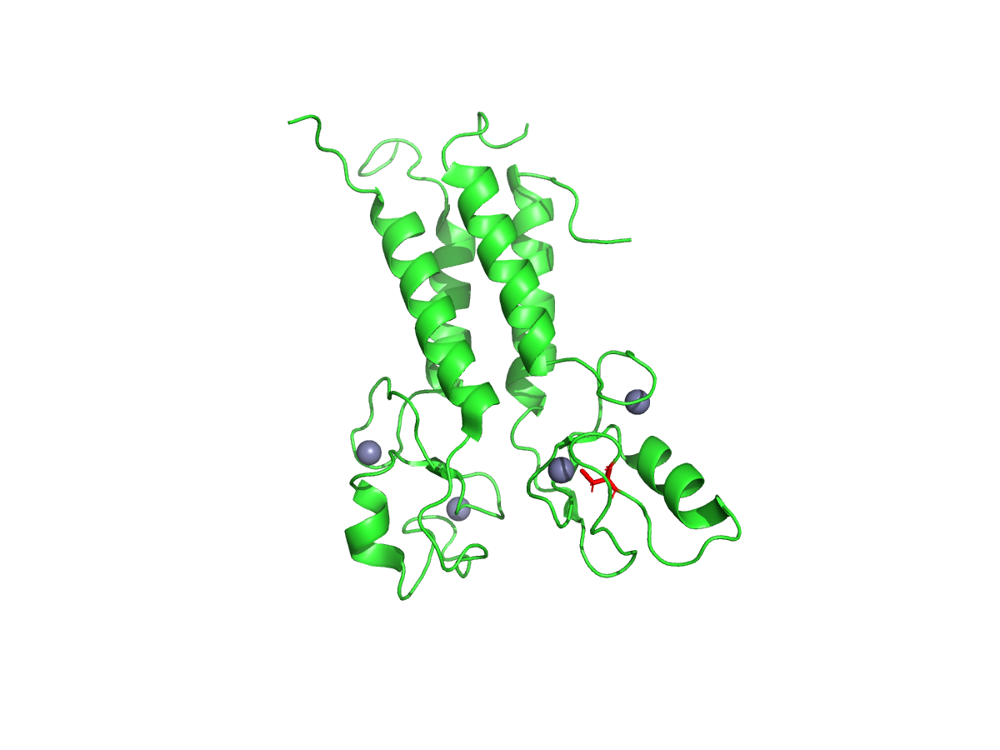

BRCA1 is a tumor suppressor gene strongly linked to hereditary breast and ovarian cancer. This project focuses on its RING domain, a small region (residues 1–100) responsible for the protein's enzymatic activity and its interaction with BARD1.
Using the reference protein sequence from UniProt (P38398), I compared the wild-type sequence with a known pathogenic variant, C61G, where cysteine at position 61 is replaced by glycine. A short script in R was used to align both sequences character by character and confirm the exact mutation site.

To visualize the structural context, I loaded the RING domain crystal structure (PDB: 1JM7) in PyMOL and highlighted residue 61 within the BRCA1 chain. Cysteine 61 is one of several residues that coordinate a structural zinc ion — replacing it with glycine likely disrupts this coordination, destabilizing the domain's fold and impairing its normal function.